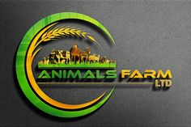

Technology in agriculture promises a revolution in how food is grown, harvested, and distributed, driven by advancements in precision farming, automation, and biotechnology. Precision agriculture employs data analytics, GPS, and IoT sensors to optimize field-level management regarding crop farming. Automated machinery, such as drones and autonomous tractors, streamline planting, monitoring, and harvesting processes, reducing labor costs and increasing efficiency